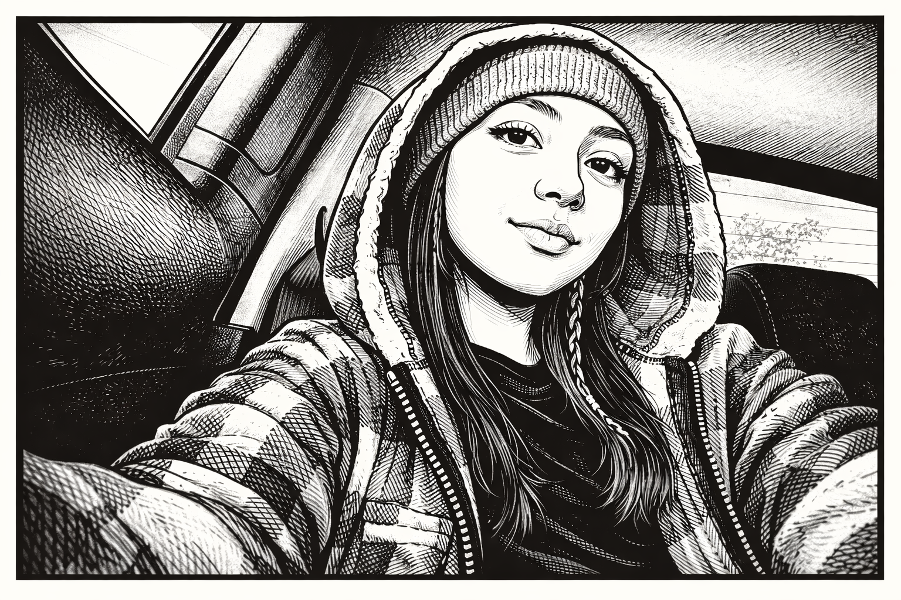

Me llamo Sthefany, me gustaría estudiar arquitectura o ingeniería civil,
ya que me interesa el diseño, la construcción y la creación de espacios.
Me gusta combinar la creatividad con la lógica. También me gustan los animales,
leer, escuchar música pop y pintar, ya que estas actividades me permiten expresarme y aprender.

Mi creatividad surge gracias a la música, y a querer saber lo que les puede
gustar a los demás para así crear diferentes ideas
Mis Trabajos
Aquí aparecerán mis mejores diseños de Grado 10 y 11